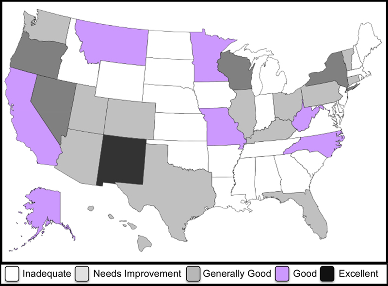

By Warren D. Smith, 7 Nov. 2014. warren.wds AT gmail.com There also is a simpler shorter summary and a questions & answers page. WARNING 9 Nov 2014.
ABSTRACT. Our statistical analysis now looks pretty solidly convincing that the 2014 midterm elections were manipulated to favor the Republican side. We employ both parametric and nonparametric tests; both work. The nonparametric (i.e. pretty much model-independent) tests find in close US senate & state governor elections ("close" reckoned pre-election by Cook Political Report)
(Our underlying discrepancy numbers are taken direct from RealClearPolitics.com poll averages.) The tests which do depend on a model – normal error distribution – of polling errors, find enormous confidences that the state elections with some of the most extreme discrepancies versus polls, were manipulated. (But we employ a highly conservative estimate, i.e. expected to be a safe overestimate, of σ when computing confidences under this model.) In 5 example US senate races, these confidence levels range between 99.3% and 99.99999999999999999999% depending which state & election, and which error-estimation method is used for it. The net effect of all 3 kinds of tests seems to produce too much significance to be disputable.
The media trumpeted that these elections were a "wave" – no, a "tsunami" – thrusting the Republican party into majority control in the US Senate, plus also enlarging the majority they already had in the US House.
But was this due to honestly counting pro-Republican voter sentiment in the electorate, or to dishonest election manipulation? Or both? My initial motivation for this study was my worries that this election might be manipulated, based on the following reasons:
"more than 2000 election judges – a fifth of the total – failed to show up at polling places after automated phone 'robo'calls beginning on Saturday falsely informed them that they were unqualified without additional training. Officials from both the Democratic and Republican parties in the city denied involvement in the calls, which an election board official said appeared to target a particular party that he declined to identify." "This is a new dirty trick," said Chicago Election Board spokesman Jim Allen.That was from the CBS news story 'Malicious' Robocalls Leave Chicago Short Of Thousands Of Election Judges dated 4 Nov 2014 by Pam Zekman.
E.g. Larry Sabato, a political scientist at the University of Virginia, said on "Fox and Friends" TV show Wednesday morning (5 Nov 2014). "I want an investigation of the polls in Virginia. They were completely wrong, just as they were in Georgia. They were also way off in Illinois, and I could go on and on. Boy, is that an industry that needs some housecleaning."
But an equally possible interpretation to the view that many different pollsters, all with different methodologies and funders, all got it wrong in the same direction is: this proves there were a lot of election-manipulation shenanigans happening! Here is a quick look at the examples Sabato pointed out, plus Kansas and Arkansas, which are even more discrepant:
Some of these results are extremely unlikely if the polls are taken at face value. Specifically, the following Senator races, among the examples above, appear to be statistically significant (in approximately decreasing order): Kansas, Virginia, Arkansas, Georgia.
Let's look at Kansas. RealClearPolitics apparently based its average on polls of 963+907+1137+623+757+1973+960=7320 likely voters. The standard error bar for such a super-poll should be ±0.58% for an individual candidate, or twice that, namely 1.16% of the number of voters, if we are reckoning the Orman-Roberts vote-difference. The actual error in that difference was 11.6%. This is 9.9 standard deviations (9.9σ) off. The chance that such a large discrepancy would occur via statistical fluctuations alone, if the polls really chose a random sample of voters, is below 10-22. If you do not like this way of estimating the standard error – since it assumes essentially ideal performance by the pollsters – a different method is to assess it via inter-poll discrepancies. Specifically, the 8 polls RCP used reported the following margins for Roberts (as a voter-percentage; negative means Orman was ahead in that poll):
with unweighted mean=-0.4625 and sample standard deviation 2.65.
Notice at this point I do not divide 2.65 by √8, which would have yielded 0.94 as our estimate for the standard error of the 8-poll-average. I thus am intentionally not taking advantage of the fact that the average of N random variables tends to have standard error √N times smaller than for each one alone. This is because I want this number to yield an upper bound on the standard error. I'm trying to get what is probably an optimistic error estimate the first way, and what is very likely to be pessimistic the second way, to "play it safe." (To oversimplify a bit, this non-division causes our estimate of the error in an N-poll average to be reckoned, quite conservatively, as roughly the error in the individual polls.) And I'm playing it safer on the upper bound than the lower bound, because if we are going to err, I want that erring to be an overestimate of σ.
So using σ=2.65, we now are only 11.6/2.65=4.38 standard deviations off, so the chance that could have happened by fluke is 0.000006. (Again: This second error-estimation method is very probably pessimistic while the first is probably optimistic.)
So I conclude that in Kansas either the pollsters were unable to obtain a random voter sample, or the official election was manipulated, or both. Experienced pro pollsters generally are pretty good at getting random voter samples, e.g. by "correcting" their actual sample to make it agree with demographic data about, e.g. actual voters last election (determined via exit polls).
In Virginia, if RCP based its average on polls with 634+738+1605+444+690=4111 likely voters, then standard error (for estimating Gillespie-Warner vote-difference) ±1.56% of voters. The polls gave these Warner margins:
with unweighted mean=10.2% and sample standard deviation 2.05%. (I now again do not divide 2.05 by √5 which would have yielded the σ estimate 0.917.) Using σ=1.56 and σ=2.05, the same two estimation methods then finds Warner's official margin 0.8% was either 5.71 or 4.34 standard deviations off the RCP poll-average 9.7% predicted margin for probability levels of only 6×10-9 or 0.000007 respectively that this was merely a statistical fluke.
In the Arkansas senate race, our two estimation methods yield probability levels 2×10-12 and 0.007 respectively.
In the South Dakota senate race, our two estimation methods yield probability levels 7×10-8 and 0.00003 respectively.
In the Iowa senate race, our two estimation methods yield probability levels 0.00001 and 0.007 respectively.
In the Kentucky senate race, our two estimation methods yield probability levels 7×10-11 and 0.002 respectively.
In the Massachusetts senate race, our two estimation methods yield probability levels 0.0005 and 0.093 respectively.
A contrast: The Iranian election of Mahmoud Ahmadinejad in 2009 was claimed by many USA pundits and government propagandists to be fraudulent. This fueled protests in Iran. But Ken Ballen and Patrick Doherty, who work for a nonprofit group called Terror Free Tomorrow: The Center for Public Opinion, in the 15 June 2009 Washington Post disputed that, claiming this election was honest. This was based on their own poll of 1001 Iranians conducted in June which had predicted Mahmoud Ahmadinejad's victory. Their poll showed "Ahmadinejad leading by a more than 2 to 1 margin – greater than his actual official victory (62.6 percent versus just less than 34 percent for the main challenger, Mir Hussein Moussavi). Further, another op-ed "Ahmadinejad won; get over it" appearing originally on politico.com, then reprinted (19/06/2009) by Al-Jazeera, authored by Flynt Leverett also claims that election was honest. I personally found these defenders of Iran 2009 to be more convincing than the attackers (who had little or no evidence). But if you want a better idea, install a mathematically better voting system in Iran, e.g. score voting which is immune to vote-splitting. Vote-splitting effects seem to have been a much larger problem than fraud (if any) in this election.
My point: there was a lot less evidence for fraud in Iran 2009 than in 2014 USA since we've got a lot more and better polling in the USA, and said polls disagreed more violently with reality. So unless you hear at least as much whining about the USA election as you heard about the Iran election, you know those whiners are hypocrites.
There were 36 US senate races in November 2014 (including a few special elections). The discrepancy between the official margin of victory and the pre-election poll average (both with the sign Republican-NonRepublican) ranged from a low of –6.0 for Massachusetts – i.e. the Democrat Ed Markey won by 6.0 percent of voters more margin than expected, i.e. by 62.0-38.0=24.0 over Brian Herr(R) versus 53.0-35.0=18.0 margin in RCP's pre-election poll average – to a high of +14.7 in Wyoming. If we just focus on the 6 states WY AR TN VA SD IA that Nate Silver claimed had the greatest discrepancies (all 6.2 or above) we find that 5 were Republican-controlled and 1 Democrat-controlled (here defined as having a Republican Secretary of State, the official generally in charge of elections), namely Republican: WY Max Maxfield, AR Mark Martin, TN Tre Hargett, SD Jason Gant, IA Matt Schultz; Democrat: VA Levar Stoney. Well, that was a mildly impressive, but certainly not a hugely impressive, finding.
There were 35 state governor races in November 2014 with the official-poll discrepancies ranging from a low of –2.5 for Alabama to a high of 21.5 for Nevada. If we focus on the 6 states with the greatest discrepancies NV TN SD MD VT OH (all above 10.0 according to Nate Silver – we later will focus on RealClearPolitics.com numbers, not Silver since he is less transparent, but this whole section is a preliminary examination so let's not worry about that right now) we find that 3 were Republican-controlled and 3 Democrat-controlled. (Repub: TN Tre Hargett, SD Jason Gant, OH Jon A. Husted; Dem: NV Ross Miller, MD John P. McDonough, VT James C. Condos.) Unimpressive.
OK, that hardly supports the "Republican conspiracy" theory. However, thinking a bit more, if you wanted to bias things, you wouldn't bother in the wide-margin easy-victory states. That would be pointless. You'd only do it in the close states. So let's examine the "close races" hypothesis systematically.
If we focus only on the 9 close Senate races as reckoned pre-election (before September) by Cook Political Report ("toss-up" and "lean" categories), then ordering them from greatest to least Repub-favoring discrepancy between polls and official results, we have
where we have starred (*) the Republican-controlled states. Their discrepancies are
all taken directly from RealClearPolitics.com figures hyperlinked to each state. That's fairly impressive. (It would be even more impressive had we also included KS*, but Kansas was not considered close by Cook since it only became so after Chad Taylor dropped out of the race.) If the discrepancy were totally unrelated to party-control then the chance that the 5 Repub-controlled states would have all by luck included the top 4 discrepancies (i.e. the fraction of the 9! orderings of these 9 states that have the top 4 states in the ordering starred) would be 5×4!×5!/9!=5/126≈0.0397.
If we focus only on the 17 close Governor races as reckoned pre-election by Cook Political Report, then ordering them from greatest to least Repub-favoring discrepancy between polls and official results, we have
where we again have starred (*) the Republican-controlled states. Their discrepancies are
This again is fairly impressive.
If the discrepancy were totally unrelated to party-control
then the chance that, purely by luck, the 8 Dem-controlled states would have contained
all 5 of the bottom 5 in our list of 17, would be
Put both these results (close Senate and close Governor) races together, and the
chance we would have seen effects at least this severe in both is
This makes it seem that the "big Republican conspiracy" theory (more precisely: the hypothesis that the Republican-favoring discrepancy between polls versus official results is boosted if a Republican holds the Secretary of state position in that state) is supported by the close-race data, statistically significantly, at 99.96% confidence level.
Incidentally, note this ordering-based method ("non-parametric robust statistics" as they say in the biz) of analysis is equally applicable in "Republican tsunami" election years or "Democrat tsunami" election years (or anything in between). Parametric methods tend to yield more statistical significance than nonparametric methods, but the price you pay for that is the parametric methods tend to depend heavily on the validity of some assumed probability model, e.g. "normally distributed errors." Meanwhile nonparametric tests are very "robust" i.e. remain valid highly independently of any modeling assumptions. Also, nonparametric methods often are simpler.
The way I just did it, this analysis could be criticized on the grounds than my particular tests were somewhat arbitrarily selected. For example, in the Governor races I arbitrarily chose to look at the last 5 states in the ordering. Why 5? Well, I could have chosen other values, but I picked this one since there the last 5 all were Dem-controlled states, hence 5 seemed likely to "prove the presence of evil." So a critic could argue that really my test-failure was less significant than it seems. E.g. if I could have chosen 10 values, and I picked the "worst," then arguably this test-failure is 10 times less statistically-significant than it seems.
That's a legitimate criticism. We could counter that 5 was a pretty natural choice. But a better reply, which totally avoids this kind of criticism, is to redo those tests this time in a non-arbitrary manner. Define the "bias score" of a binary word to be the sum of the positions of the 1-bits in the word, where for a 9-bit word the "positions" are 876543210. The point is, the "Republican controlled 'starred' states tend to lie on the left side of the ordering" is equivalent to the 1-bits tending to lie toward the left side of a binary word. Then:
The 9 close US Senate races 2014: Among the 84 binary 9-bit words with 6 bits '1', the number whose bias score is at least as great as 30 (which is the bias of 111101010), is 7. As a fraction this is 7/84=1/12≈0.083333.
The 17 close State Governor races 2014: Among the 24310 binary 17-bit words with 9 bits '1', the number whose bias score is at least as great as 91 (which is the bias of 01101111110100000), is 905. As a fraction this is 905/24310=181/4862≈0.037227.
Combination:
The chance of both the close senate and close governor races
exhibiting this much (or more) bias naturally therefore is
Conclusion (after criticism addressed): The "big Republican conspiracy" theory (more precisely: the hypothesis that the Republican-favoring discrepancy between polls versus official results is boosted when a Republican holds the Secretary of state position in that state – this phenomenon could equally well be branded the "big Democratic conspiracy" if all we look at is the ordering data) is supported by the close-race data, statistically significantly based on that ordering data, but now only at the 99.7% confidence level.
That was solely based on considering ordering, ignoring the actual sizes of the discrepancies (aside from their ordering). If we now also throw in the huge sizes of some of the discrepancies in certain individual states, then this confidence will rise further, to levels which seem indisputable – as well as now placing most of the blame for this on the Republicans. For example, if we use the more-conservative of our two p-level estimates for each of the Senate races in KS, VA, AR, SD, IA, then their combined p-level becomes
where I have included a safety factor of 365 to compensate for the same sort of valid criticism as before (i.e. if I always pick the "worst" among 36 states, then that state's discrepancy has 36× less significance than some naive estimation) and an additional extra-safety factor of 100 to compensate for possible numerical roundoff errors, claims I'm a nasty fellow, the fact skeptics might come up with some further criticisms in future, etc. (Actually we could easily drive these p-values to even more microscopic levels by also including some large governor-race discrepancies, etc.)
Incidentally, note that Senator & Governor races (the only kind considered on this page) all are unaffected by gerrymandering. Gerrymandering is also a very bad problem in the USA, but inadequate as an election manipulation tool since it cannot be used for Senators, Governors, and the President. Hence they had to invent other manipulation methods too.
If both the ordering analysis and those 5 large-discrepancies are put together, then even with my extra-safety factor 100 we still are getting confidence levels of 99.9999999999% that this election was manipulated to favor the Republican side over and above the presumably-fair results reflected by multiple polls. If you want to take the ultra-conservative attitude that all polls are utterly random garbage and the sizes of poll-official discrepancies by themselves mean absolutely nothing, then, the joy of our ordering-based analysis method is that we then still get 99.7% confidence!
I think an important lesson to learn is that the USA needs unbiased people and systems to run and count its elections – not to mention drawing its districts. In many cases, the most biased person in the entire state is intentionally selected to be its "Secretary of State" in charge of all elections in that state, with hire & fire power over all its employees, and including often supervising their own election. For example, Kansas's notorious SoS Kris W. Kobach just supervised his own re-election, winning by a 59.4:40.5 margin (18.9 points) over Jean K. Schodorf despite a 6-poll-average computed by Insight Kansas from 30 september thru 27 october showing Kobach with a 3.8 percentage point average lead; the 6 individual poll leads ranged from 0 to +8. Also Kobach won despite virtually most observers agreeing he clearly is highly biased. (Such as unanimous court decision overruling his weird attempt to force Taylor to run...) Actually this lesson should have been obvious from the beginning. The USA is the laughingstock of world democracies in this sense. But we now have clear statistical evidence that SoS's do abuse their power to put their thumbs on the scales.
Different stars *: In these section, we shall star a state, not if (as before) it is "Republican controlled" but rather, if its election audit procedures are "Inadequate" according to this color-coded US map
independently produced by the independent voting-reform group VerifiedVoting.org in 2009, i.e. well before this Nov. 2014 election. ("Inadequate" usually means no, not even a pretense, of audits, which is unfortunately the case for 25 of the 50 US states, if I counted right on that map.)
Different ordering: We also shall order the states differently. For the 9 close Senate states, instead of ordering them by by decreasing Republican-favoring official-poll margin discrepancy, we'll just order by decreasing absolute value of the official-poll margin |discrepancy|.
The idea we now are trying to test: The larger the |discrepancy|, the more likely it was caused by evil election manipulation, and for this test we shall not care which side is doing the manipulating in that state. We just want to test the hypothesis that states with poor auditing procedures, are more manipulated. Or, if you want to put a happier(?) face on it, "more prone to severe errors."
The resulting re-starred re-ordering of the 9 close senate races is:
Their |discrepancies| are
all taken directly from RealClearPolitics.com figures hyperlinked to each state. WOW! This is the uniquely worst scenario. The probability this would have happened by luck (if |discrepancies| between the poll-predictions and official margins had nothing to do with how lax that state's auditing procedures were) is 4!×5!/9!=1/126, because among the 9! possible orderings of these 9 states, only 4!×5! happen to have the 4 starred states at the top of the ordering.
If we now examine the 17 close state Governor races re-ordered and re-starred by the same prescriptions, we find
Their |discrepancies| are
Among the 24310 binary 17-bit words with 8 bits '1', the number whose bias score is at least as great as 77 (which is the bias of 11100½½1001½½0101), is 2867. As a fraction this is 2867/24310≈0.117935.
Combined, this tells us that yes – laxer
election auditing procedures, as reckoned by
VerifiedVoting.org,
do correspond, statistically significantly, to greater chicanery
as measured by official-poll |discrepancies|.
The p-level for this conclusion is
(I thank Kathy Dopp for suggesting that this be tested and pointing out that color-coded map.)
Mike Stay found a criticism which worries me. I have to think on it. (Also there is a second more minor unrelated issue which may require me to multiply some of my p-levels by a factor of about 2, which will not matter terribly much.) The criticism is based on this disturbing essay by H.Enten. It claims that "nontraditional pollsters" (i.e. who use techniques other than actual human-human interviews with random pollee selection via, e.g. phones – for example, internet and robotic techniques are a lot cheaper, but worse, techniques that unfortunately are being employed more and more)
This casts a tremendous amount of stuff into doubt. Including maybe my own study right here (yikes!); I'd better consider that. Hopefully: (1) the fact I've here concentrated on close races means there was enough polling interest that the good pollsters participated almost all the time, plus (2) hopefully I'd incorporated enough safety margins into the analysis all this will hardly matter, and (3) the nonparametric analyses presumably are hardly affected, if at all. But anyhow, all this needs some thought, and the present study is now under a cloud as far as I am concerned and will remain so until I address this.
Incidentally, Enten's essay would have been more convincing had he looked at nontrad pollsters in same elections as trad, but coming after, or coming before (enabling cheating, or not). And if he had actually used their poll sizes, and claimed error bars, as opposed to just ignoring that data.
The computer program I used to compute "bias score" counts.
Election Day 2014: Independent Voters Locked Out Again by Aaron Hamlin.
The Verifier - Polling Place Equipment - November 2014 at VerifiedVoting.org
The Polls Were Skewed Toward Democrats by Nate Silver 5 Nov. 2014. (Contains some erroneous data, which Silver correctly warned was "preliminary.") Quote: "In the past, Republicans have tended to outperform their polls in red states while Democrats have done so in blue states", a claim Silver supported with this previous analysis by him. His quote agrees with my results here; and again, if true, is damning. [For readers not joined at the hip with the USA media hype machine: "Red"=Republican-controlled and "blue"=Democrat-controlled in Silver's jargon. It of course makes no sense historically that the more conservative party should be assigned the color "red" (!), but for some unknown reason Silver and many media pundits have adopted that convention.] Incidentally, note Silver's title "The polls were skewed" seems on the surface to disagree 180° with my view the elections were manipulated, even though the actual content of Silver's piece seems to agree with my views! Silver's piece simply takes it as an article of faith the problem lay with the polls, not the elections, and devotes not one scintilla of effort, not even a single sentence, to examining the question of which. However, had Silver been working with election-verification groups of the sort which often use polls as a tool to help decide whether some country is conducting fraudulent elections, presumably his attitude would differ from that. Since otherwise, they'd fire him.